Dramski rad
Moj dramski rad počeo je u osnovnoj školi. Glumio sam glavne uloge u dječjim igrokazima. Za vrijeme rada u KUD-u Šokadija od 1976. – 1981. napisao sam i uvježbao nekoliko kraćih dramskih uprizorenja. Kasnije sam režirao prvu dramu pri KUD-u, a ostale u Dramsko-literarno-recitatorskom društvu Klasje.
Komedija Pljusak Petra Petrovića Pecije. Premijera održana u jesen 1981. Doživjela pet repriza. Glumili: Marija Rajković, Antun Ručević, Snježana Zovko, Ljubica Turkalj, Branka Gašparović, Snježana Kos, Ivo Slamnjaković i Pavo Martinović Cole.
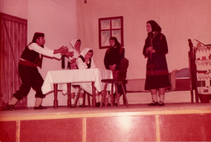
Marija Rajković, Antun Ručević, Snježana Zovko, Ljubica Turkalj, Branka Gašparović
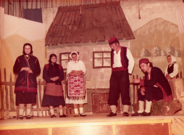
Marija Rajković, Antun Ručević, Snježana Zovko, Ljubica Turkalj, Branka Gašparović, Ivo Slamnjaković
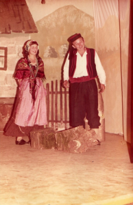
Snježana Kos i Antun Ručević
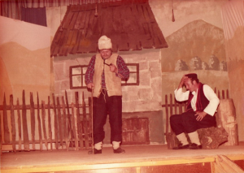
Pavo Martinović Cole i Antun Ručević
Drama Šokica Ilije Okrugića. Premijera jesen 1982. Petnaest repriza. Proglašena za najbolju predstavu na Smotri u Retkovcima i predstavljala je Općinu Vinkovci na Regionalnoj smotri u Novoj Gradiški.
Glumci: Vesna Pandža, Antun Ručević, Manda Petričević, Ivan Gašpar, Jure Medved, Ljubica Turkalj, Antun Dragičević, Snježana Kos, Branka Gašparović, Pavo Martinović Cole, Bruno Kos, Miro Majić, Jozo Đurošević.
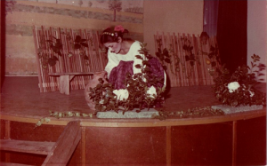
Vesna Pandža
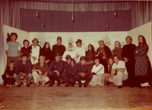
Stoje: Franjo Jukić, Marija Rajković, Pavo Martinović, Ljubica Turkalj, Jure Medved, Vesna Pandža, Icko Gašpar, Manda Petričević, Tuco Ručević, Branka Gašparović, Tutor Dragičević, Snježana Kos. Čuče: dijete?, Mirko Blažević, Vinko Gašparović, Jozo Đurošević, Bruno Kos, Miro Majić, Tomislava Gašparović, Mara Čabrajac i Pavo Petričević.
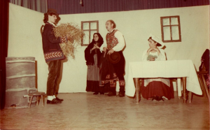
Icko Gašpar, Manda Petričević, Tuco Ručević i Vesna Pandža
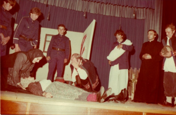
Stoje: Bruno Kos, Jozo Đurošević, Miro Majić, Icko Gašpar, Tutor Dragičević i Pavo Martinović. Čuče: Manda Petričević i Tuco Ručević. Leži Vesna Pandža.
Drama Sokol ga nije volio Fabijana Šovagovića. Premijera jesen 1983. Devet repriza.
Glumci: Antun Ručević, Manda Petričević, Perica Teglović, Vesna i Pinja Pandža, Ljubica Turkalj, Snježana Kos, Branka Gašparović, Jozo Orlović, Vinko Jenić, Željko Đerek, Ivan Gašpar, Franjo Jukić, Antun Dragičević, Pavo Martinović, Marko Martinović, Ivica Mrgan, Ivo Slamnjaković i ?
Stoje: Ljubica Turkalj, Marko Martinović, Perica Teglović, Tuco Ručević, Željko Đerek, Icko Gašpar, Manda Petričević, Jovo Mrgan, Vesna Pandža, Snježana Kos, Jozo Orlović, ?, Branka Gašparović i Ivo Slamnjaković. Sjedi Vinko Jenić. Čuče: Tutor Dragičević, Ferenc Jukić i Cole Martinović.

Tuco, Vinko, Icko, Vesna, Manda, Jozo i Tutor
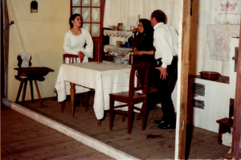
Vesna, Manda i Tuco
Komedija Državni lopov Fadila Hadžića. Premijera 1984. Tri reprize.
Glumci:
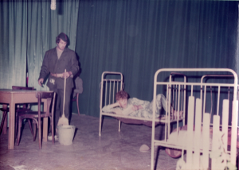
Petar Teglović i Antun Dragičević
Petar Teglović i Ivica Mrgan
Drama Druga brazda Antuna Ručevića. Premijera 1998.
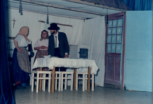
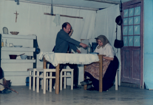
Recitali:
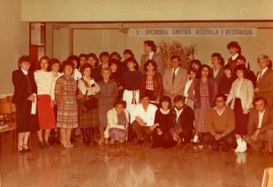
1. općinska smotra recitacija 1982.
Sve što se rađa grob u sebi nosi – 1989.
Čarobni krug – 1985.
Igrokaz: Da mi je biti mlad na poklade – 1980. Izvođači: Mira Žgela, Grga Krajina i KUD Šokadija.
Dijalog: Prava ljubav: 1979. Maja Kiprović i Dragan Pavlović, 2002. Ivana Miličević i Hrvoje Vulić, 2015. Manda i Pavo Petričević
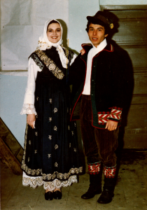
Maja Kiprović i Dragan Pavlović
Šaljivi igrokazi izvedeni uglavnom na Večerima humora
Vatrogasci – 1984. DLRD Klasje
Sve što se rađa grob u sebi nosi – 24. 12. 1989. DRLD Klasje
Tko te ljubi dok sam ja na straži
Razredna zajednica
Dirigent Tutorini
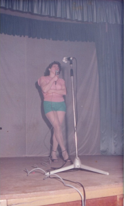
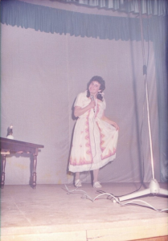
Indijanci
Kauboji
Svi ste naopako
Samoposluga
Misica u nošnji
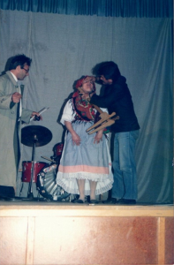
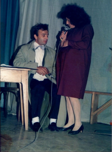
Mikanovačka televizija
Striptiz
Modna revija
Igrokazi na promocijama knjiga:
Pijanci
Cirkus
Dirigent Tutorini